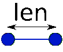

QAnimDrawer Help
| Previous | Next |
Create an image
An image can be used to draw an edge of the skeleton. It has to be created with a correct geometry to wok well.
We begin with an edge, which has an "average" length (since it can change between positions).
|  |
The picture can have every length, it will be scaled to feet the edge. With an image length close to edge average length, the display will be better.
We have to choose an height, which won't be scaled if edge length changes.
Then the dimensions of the picture have to be:
The left and right parts of the picture are used to draw joins between edges.
The picture of the head will look like that: (we draw the two nodes to help)
 |
The top of the head can be everywhere since there is no more edges after. The neck has a slightly round base for the join.
| Previous | Next |